User manual · English
Mathias' kleines PDF-Werkzeug
Seventeen tools for one recurring problem: turning scanned documents into a clean, correctly formatted PDF file after the fact — straighten, split apart, reassemble, bring to a standard size, shrink. This manual walks through every tool using a real example.
Tool 01
Create PDF
The starting point for practically every session: PDF files, JPGs, BMPs, and TIFFs (including multi-page ones) are loaded via drag & drop into a shared file list and combined into a single PDF in exactly that order. This list is the hub of the whole app — every other tool keeps working on the same list, without needing to export and reload in between.
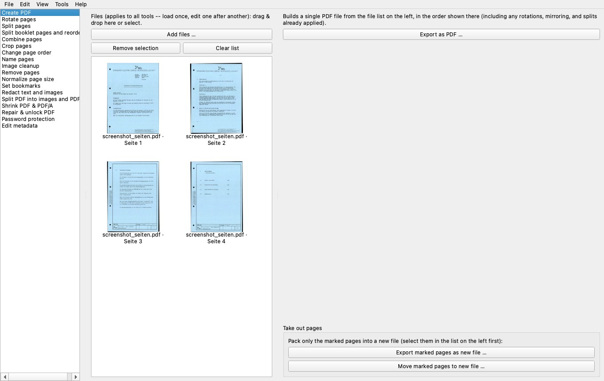
- Load files via Add files … or drag & drop into the middle list.
- Change the order by dragging within the list, if needed, or reverse it entirely via Edit → Reverse order (with pages selected, just their order among each other).
- Optional: prepare with other tools (rotate, split, normalize) — the list is preserved throughout.
- Click Export as PDF … and choose where to save.
Tool 02
Rotate pages
Straighten crookedly scanned pages directly with the mouse: dragging in the preview rotates the page freely, fixed, colored reference lines (color freely selectable) act as a spirit level. Plus the usual quick actions — 90°, 180°, mirror — as well as a function for double-page spreads that were scanned sideways in alternating directions.
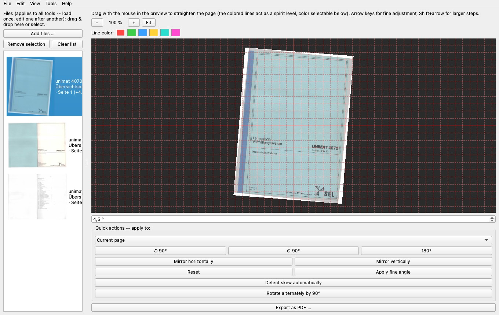
- Click a page in the list, then drag with the mouse button held down in the preview until the content lines up with the reference lines.
- Color of the reference lines selectable above the preview (six small color buttons) -- handy for colored originals where the default color is hard to make out.
- For exact values: use the number field below the preview, or fine-tune with the arrow keys in 0.1° steps (Shift (⇧)+arrow = 1° steps).
- For right angles/mirroring: use the quick-action buttons.
- Set the scope (current page / selection / all) above the list before applying a quick action.
- For sideways-scanned double-page spreads with alternating orientation: apply Rotate alternately by 90° to the whole selection.
- For large batches: Detect skew automatically suggests the angle via text-line detection (still adjustable afterward by mouse or number field); pages without a reliably detectable line pattern (photos, graphics-heavy pages) are left unchanged.
Tool 03
Image cleanup
For scanned black-and-white/text originals: converts to pure black and white (threshold, optionally auto-suggested via Otsu's method) and/or removes small dark specks (dust, print artifacts). Both steps can be toggled independently.
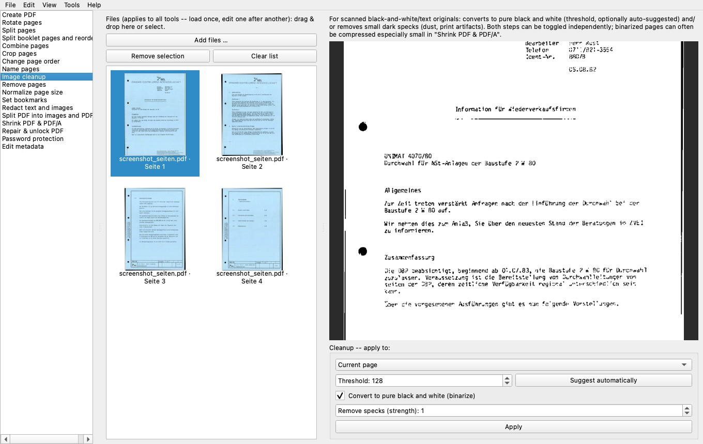
- Select a page — the preview immediately shows how threshold, binarizing, and despeckling affect exactly this page.
- Suggest automatically computes a threshold via Otsu's method that most clearly separates text/lines from the background — or fine-tune it by hand.
- Turn off Convert to pure black and white (binarize) if needed, to only remove specks while leaving gray/color values otherwise unchanged.
- Choose a scope and click Apply.
Tool 04
Remove blank pages
Searches the selected scope for likely blank pages (via ink share) — typical with automated ADF scanning (duplex with an occasionally unprinted back side, blank separator sheets). Only finds suggestions, doesn't delete anything automatically: the pages found appear in an overview with checkboxes (all preselected), so individual pages can be deselected before actually removing them.
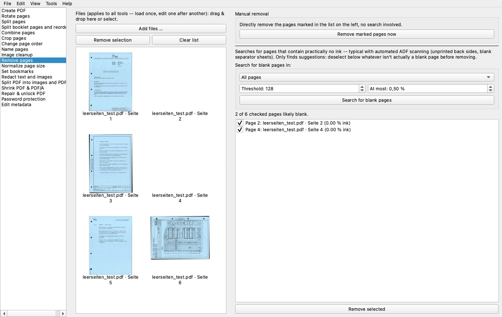
- Choose a scope (usually All pages, since one typically checks the whole freshly loaded batch) and click Search for blank pages.
- Each page found appears in the overview with a checkbox and its measured ink share — all checked by default.
- Deselect whatever isn't actually a blank page.
- Click Remove selected.
Tool 05
Split pages
Cuts a page along vertical and/or horizontal lines into a row-by-column grid — e.g. for two book pages on one double-page scan, or several form fields on one scanned sheet. The cut lines are dragged with the mouse, with zoom for pixel-precise placement.
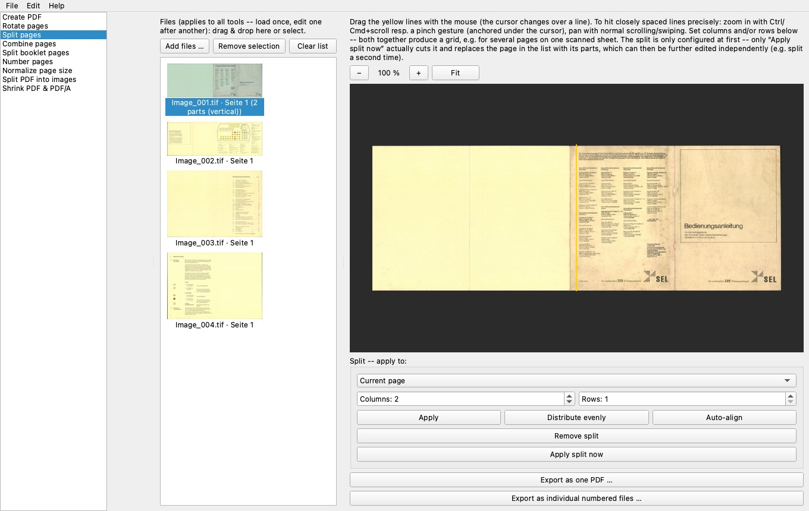
- Set the number of columns and/or rows, click Apply — the lines appear evenly distributed.
- Drag each line individually with the mouse; to hit precisely, zoom in with Ctrl/Cmd (⌃/⌘)+scroll resp. a pinch gesture.
- Auto-align pulls each line to the quietest (emptiest) nearby image area — good for a booklet's gutter instead of the middle of the text.
- Apply split now actually cuts the page apart; the parts replace the page as independent, further-editable entries in the list.
Tool 06
Combine pages
The counterpart to the split tool: several smaller scans — e.g. A4 sheets of an A1 drawing or a schematic — are assembled into one large page. One click produces an initial edge-to-edge layout; afterwards, each part can be freely dragged, fine-rotated, and cropped at the edges.
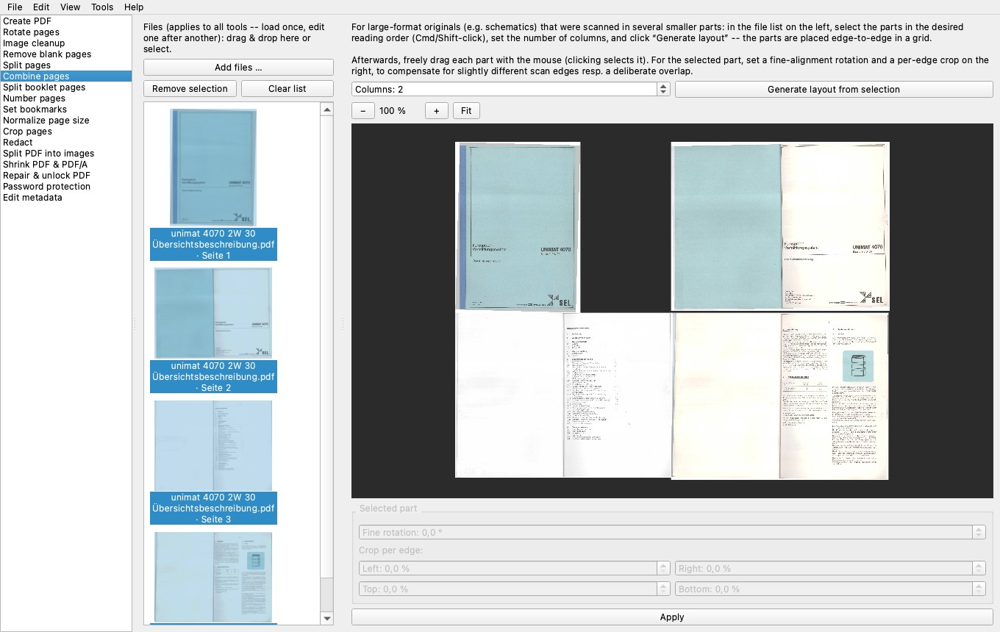
- Select the parts in the file list in the desired reading order (Cmd (⌘)/Shift (⇧)-click).
- Set the number of columns (e.g. 2 for a 2×2 grid from four parts) and click Generate layout from selection.
- Click each part in the preview (selects it) and drag it to the right place with the mouse.
- For the selected part, set a fine rotation (0.1° steps) and a crop per edge in % on the right, to compensate for slightly different scan edges or a deliberate overlap.
- Apply replaces the originally selected parts with the one assembled page.
Tool 07
Split booklet pages
For stapled booklets available as double-page spread scans in their physically stacked order (scan 1 shows the last and the first book page, scan 2 the ones before and after that, and so on): this tool automatically splits every double-page spread down the middle and puts both halves into the correct reading order — following the classic saddle-stitch formula.
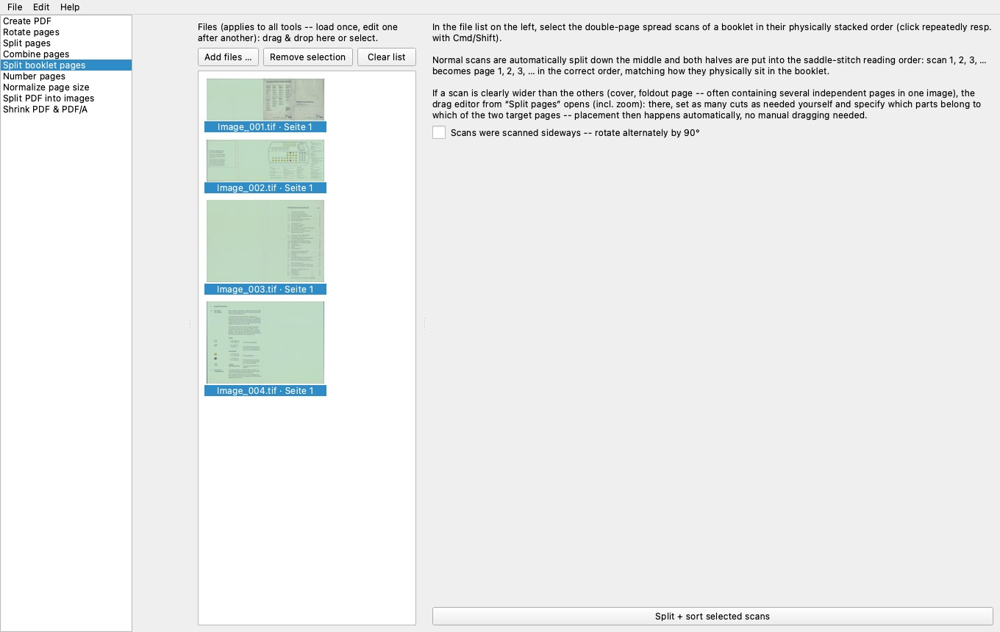
- Select all double-page scans of the booklet in their physically stacked order.
- If scanned sideways (alternating by 90° in alternating directions): check Scans were scanned sideways.
- Click Split + sort selected scans.
- If a scan is clearly wider than the others (cover with foldout part): the same drag editor as in the split tool opens automatically — set as many cuts as needed there and specify which parts belong to the left resp. right target page. Placement then happens fully automatically.
Tool 08
Number pages
For a scrambled page sequence — manually assign each page a target number, then rearrange in one step. Nothing is written onto the page, only the order in the list changes. Alternatively: automatic sorting by capture/creation date, including renaming the files on disk.
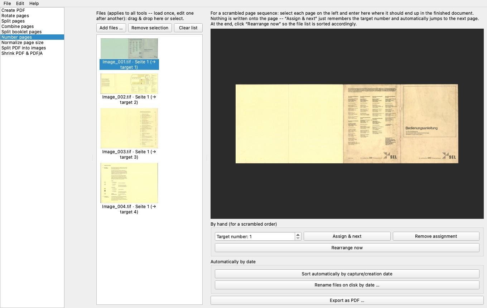
- Click a page, enter the target number, click Assign & next — automatically jumps to the next page.
- Once all pages are assigned: click Rearrange now.
- Alternatively, if capture/file date gives the correct order: Sort automatically by capture/creation date.
- To also rename the original files on disk: Rename files on disk by date ….
Tool 09
Set bookmarks
For booklets and books one already goes through page by page anyway: optionally give each page a chapter or sub-chapter title. Automatically becomes a bookmark/table of contents (outline) in the PDF file when saving — with no separate export step.
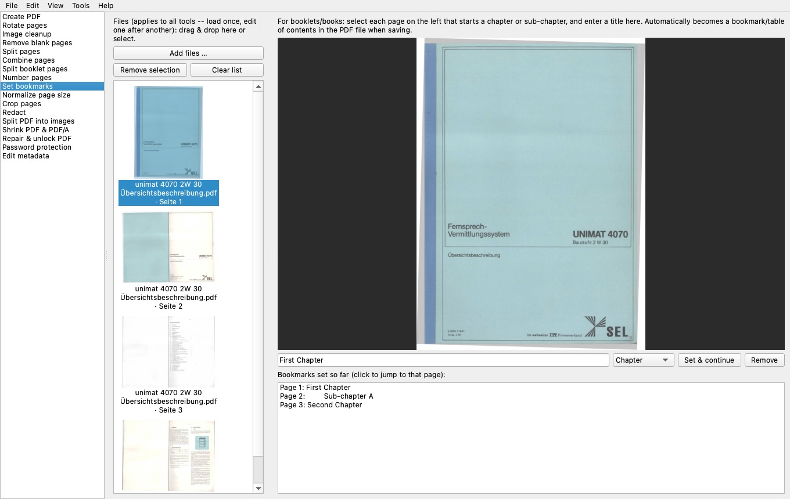
- Select the page that starts a chapter or sub-chapter, enter a title.
- Choose a level — Chapter or Sub-chapter — then click Set & continue; automatically jumps to the next page.
- The overview below shows every bookmark set so far in page order — click one to jump to that page.
- Automatically carried over into the PDF file as an outline the next time it's saved.
Tool 10
Normalize page size
Brings pages to an exact physical size — a DIN A format, a US format (Letter, Legal, …), or a custom size. Portrait and landscape orientation are detected automatically per page. Black scan borders, such as those that appear when the original was smaller than the scanner bed, are automatically detected per edge and cropped away; without a detectable border, the page is scaled directly.
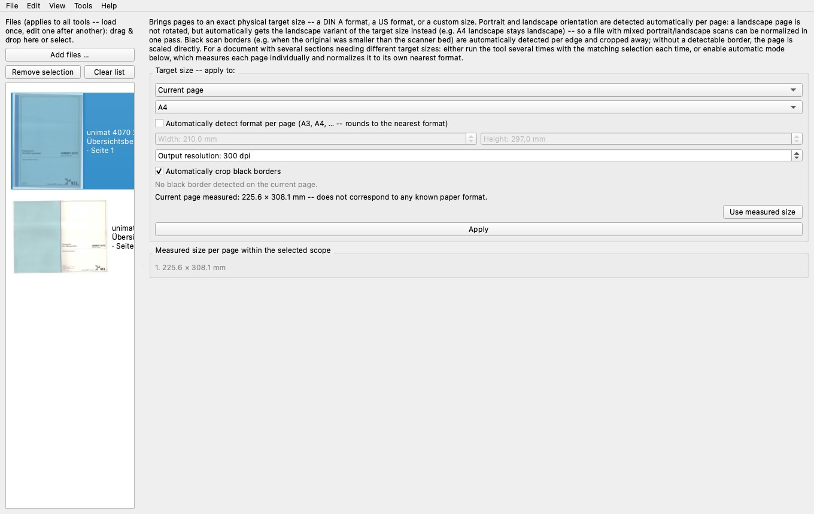
- Click a page — the tool automatically measures the current (content) size and suggests a matching format, if one is close enough (DIN A or US).
- Use measured size sets this suggestion directly as the target size — or choose a format resp. a custom size by hand.
- Set the output resolution (dpi) and whether black borders should be cropped.
- Choose the scope and click Apply.
- Alternatively: enable Automatically detect format per page -- then each page determines its own target format (rounding to the nearest known format), instead of using one chosen format for all.
| DIN format | Size (mm) | US format | Size (in) |
|---|---|---|---|
| A3 | 297 × 420 | US Letter | 8.50 × 11.00 |
| A4 | 210 × 297 | US Legal | 8.50 × 14.00 |
| A5 | 148 × 210 | US Executive | 7.25 × 10.50 |
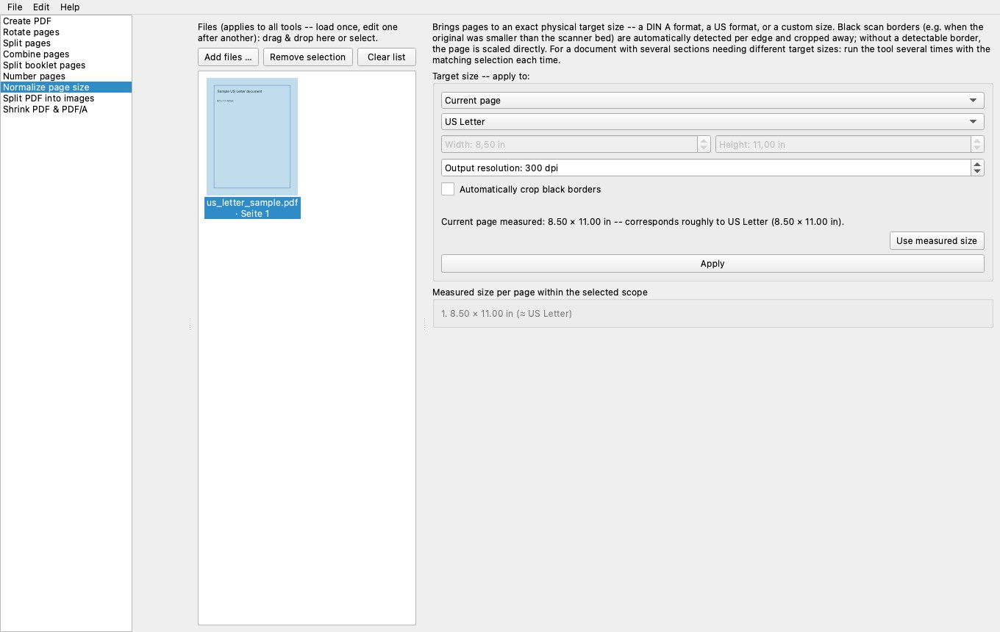
Tool 11
Crop pages
Crops pages on all four edges by a freely chosen amount — e.g. to precisely remove a punch-hole strip or binding margin. Unlike "Normalize page size", this does not scale to a target size but cuts away exactly the specified amount; the resulting size follows from that and is displayed live.
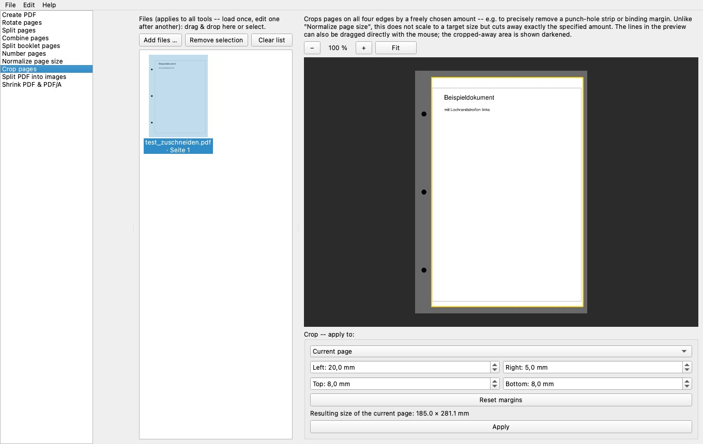
- Enter the four margins as number fields (Left, Top, Right, Bottom) — or drag the yellow lines directly in the preview with the mouse.
- To hit precisely with small margins: zoom in with Ctrl/Cmd (⌃/⌘)+scroll resp. a pinch gesture.
- The resulting size is shown live below the margin fields, including a format suggestion if one fits.
- Choose the scope and click Apply — the same margins are applied to every page within the selected scope.
Tool 12
Redact
Permanently obscure any number of areas on a page: fully filled rectangles, freely drawn, moved, and resized with the mouse. Unlike a plain black box, the rectangles are actually burned into the image pixels on save — affected pages are automatically rasterized for this, even if they'd otherwise export losslessly as a vector page, so no original text is guaranteed to remain underneath.
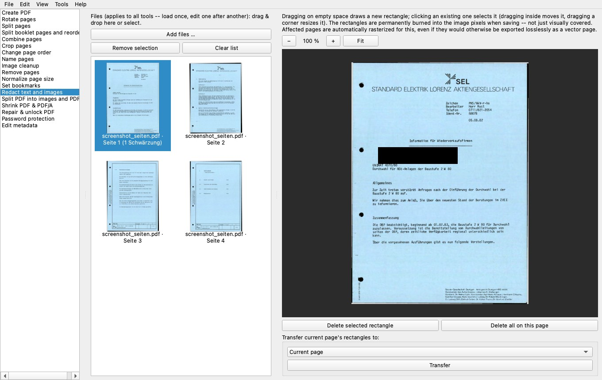
- Dragging on empty space draws a new rectangle; clicking an existing one selects it.
- Dragging inside moves the selected rectangle, dragging a corner resizes it.
- Delete selected rectangle resp. Delete all on this page removes them again.
- Transfer copies the current page's rectangles onto a chosen scope of further pages — handy for recurring information (e.g. a case number at the top of every page).
Tool 13
Split PDF into images
The way back out of a PDF: save the shared file list as individual, sequentially numbered image files (PDF, JPEG, TIFF, or BMP per page) or as one multi-page TIFF file — e.g. for further processing that expects individual image files instead of a PDF.
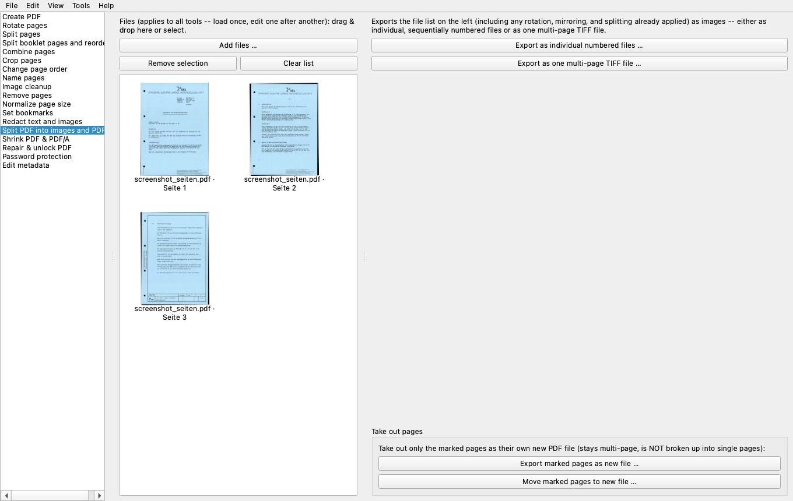
- Export as individual numbered files … for separate files — choose format, base name, start number, and digit count in the following dialog.
- Or Export as one multi-page TIFF file … for a single file containing all pages.
Tool 14
Shrink PDF & PDF/A
Three separate, independently usable functions: significantly reduce the file size of large scans via JPEG encoding (quality and maximum resolution selectable — already efficiently compressed black-and-white pages are automatically passed through unchanged, since JPEG would usually be both bigger and worse there), losslessly compress an existing PDF's structure, or mark a PDF with the markers for the PDF/A-2b archival format.
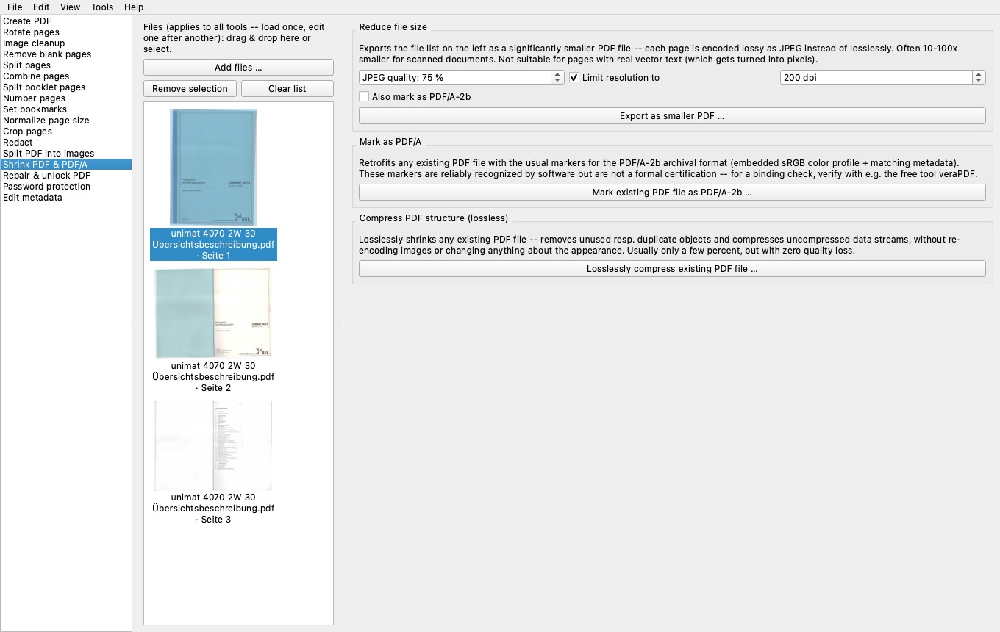
- For smaller files: set JPEG quality and maximum resolution, Export as smaller PDF ….
- If the result isn't smaller than the original, the app points this out — usually a sign that the source was already efficiently compressed; then lower quality/resolution further.
- For archival marking: choose an existing PDF file, Mark existing PDF file as PDF/A-2b ….
- For lossless compression with zero quality loss: Losslessly compress existing PDF file ….
Tool 15
Repair & unlock PDF
Three separate, independently usable functions that only belong together thematically (damaged resp. locked files): repair a PDF file that can no longer be opened; remove a file's password protection when the password is known; or recover a forgotten password (dictionary attack or brute force).
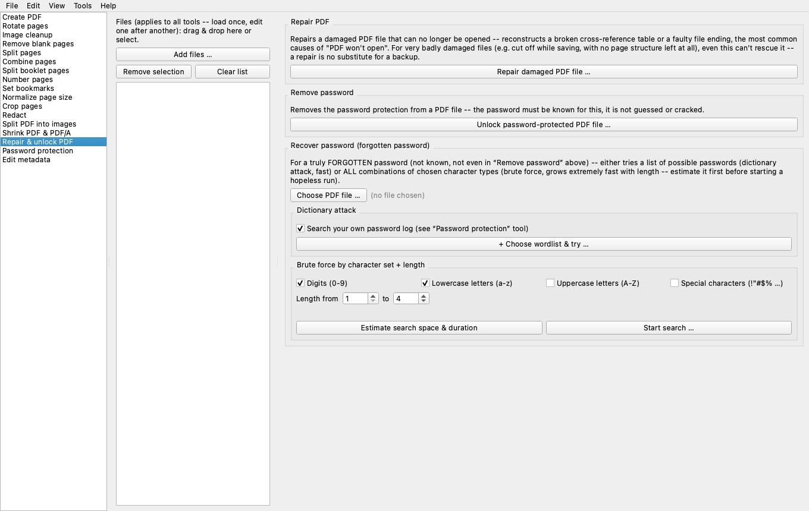
- Repair PDF: choose the damaged file, choose a target location, Repair damaged PDF file … — reconstructs a broken cross-reference table or a faulty file ending, the most common causes of "PDF won't open".
- Remove password: choose the file, enter the known password, choose a target location — saves an unencrypted copy.
- Recover password — dictionary attack: choose the file, optionally add a wordlist (one candidate per line) and/or have your own password log searched.
- Recover password — brute force: choose character types and a length range, first click Estimate search space & duration (measures the actual speed on this file), only then Start search … — can be stopped at any point via the Cancel button in the progress window.
Tool 16
Password protection
Four separate functions that share one set of encryption settings (method, permissions password, permissions): add a password to a single file, encrypt an entire folder including subfolders, encrypt files based on a list, and keep a log of passwords that have been set.
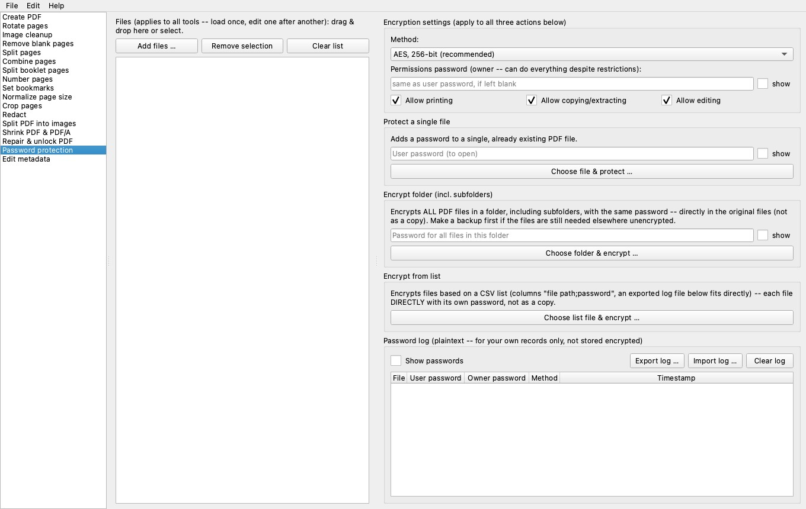
- Encryption settings (top, apply to all three actions): method (RC4 40/128-bit or AES 128/256-bit — AES 256-bit is the default), an optional permissions password (if left blank, the user password also acts as the permissions password), plus individually allowing or blocking printing/copying/editing.
- Protect a single file: enter a user password, choose the file, choose a target location.
- Encrypt folder: enter a password, choose a folder — encrypts ALL PDF files in it and all subfolders directly in the original files, not as a copy.
- Encrypt from list: choose a CSV file (columns "file path;password" — an exported log file fits directly) — encrypts every named file directly with its own password.
- Password log: automatically remembers which file was given which password. Show passwords toggles them visible, Export/Import log … exchanges it as a CSV file.
Tool 17
Edit metadata
Unlike every other tool, a single set of values applies to the whole document here, not per page: title, author, provider, product, version, release date, and keywords. PDF only has a fixed number of standard fields — the preview shows exactly how these values actually flow into them.
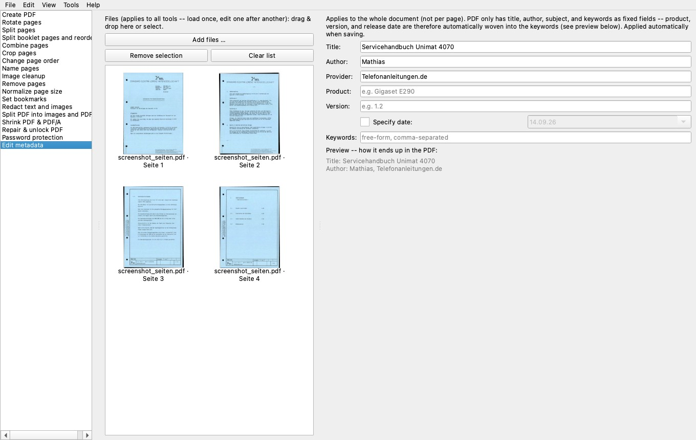
- Enter title, author, and provider — provider is prefilled with the default set in Preferences (otherwise with the one most recently used).
- Add product, version, and optionally a release date — PDF doesn't have a dedicated field for these, so they automatically flow into the keywords instead (see the preview further down in the tool).
- Applied automatically on every save — no separate Apply button needed.
- "Save As" automatically suggests a filename from these, e.g. "Product - Title vVersion (Date).pdf".
Preferences
The menu Edit → Preferences … (on macOS automatically moved into the application menu, keyboard shortcut Cmd+, (⌘,) resp. Ctrl+, (⌃,)) lets you set the interface language, measurement unit, date format, default provider, and redaction color. Language and measurement unit stay deliberately switched by hand instead of being taken automatically from the system settings, since the PDFs being edited can come from any country, regardless of how this computer is set up.
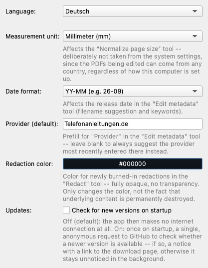
- Language: German (default) or English — takes effect only after restarting the program.
- Measurement unit: Millimeter (default) or Inch — takes effect immediately, even while "Normalize page size" is already open.
- Date format: for the release date in the "Edit metadata" tool (filename suggestion and keywords) — YY-MM, YYYY-MM-DD, or DD.MM.YYYY.
- Provider (default): prefill for "Provider" in the "Edit metadata" tool — leave blank to always suggest the provider most recently entered there instead.
- Redaction color: color for newly burned-in redactions in the "Redact" tool — clicking it opens the system's own color picker (a color wheel on macOS).
System requirements
| Platform | Minimum |
|---|---|
| macOS | 11 (Big Sur), 64-bit — Apple Silicon or Intel |
| Windows | 10, 64-bit |
About 250 MB of free disk space for the program, plus free space for temporary files while working (roughly 2 to 3 times the size of the PDFs being processed). No internet connection and no additional software needed (no Python, no ImageMagick/Ghostscript) — both program versions are fully self-contained.
Source & license
Provided free of charge by Telefonanleitungen.de. Licensed under the GNU General Public License 3.0 — free software that may also be modified and redistributed.